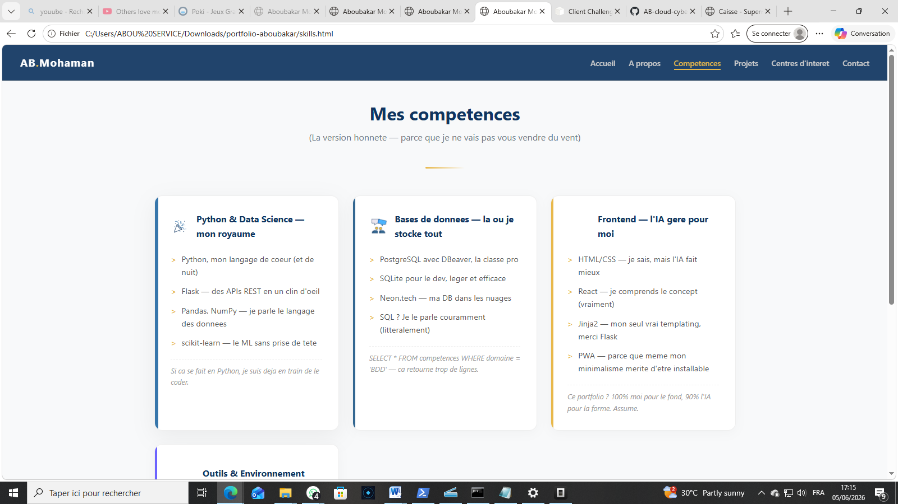
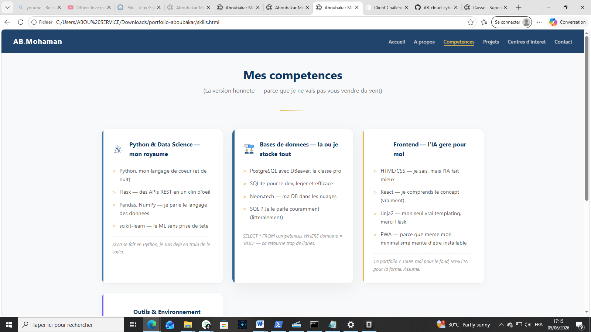
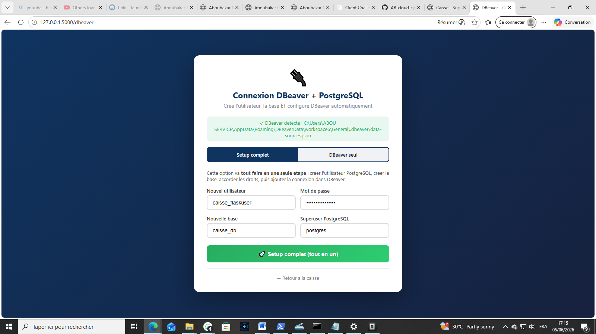
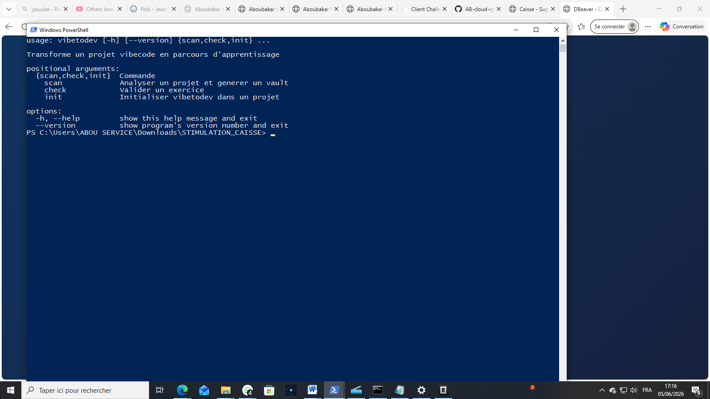
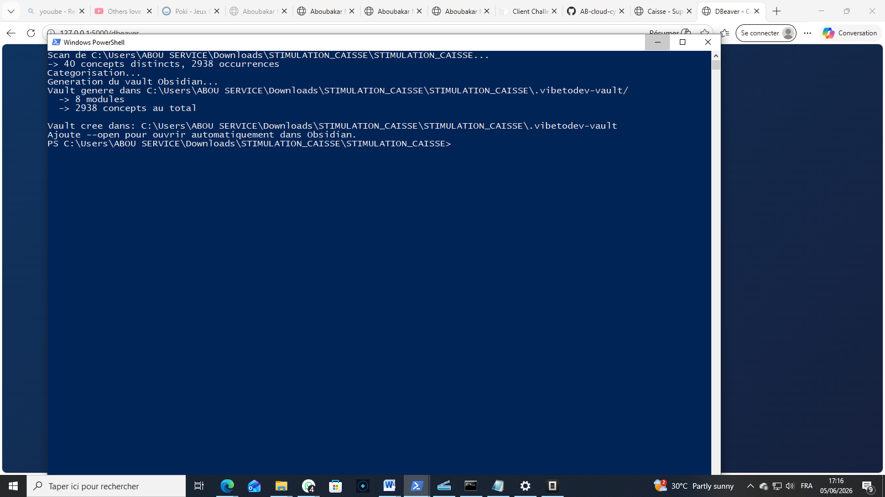

Ce que j'ai construit
(Des trucs concrets, pas des exercices de TD)
Full Stack
STIMULATION CAISSE
Systeme de gestion de caisse pour supermarche — interface web Flask, double backend SQLite/PostgreSQL, analyse de donnees integree, auto-config DBeaver.
Python Flask PostgreSQL
SQLite Pandas HTML/CSS
Interface POS web avec panier et lookup par CNI
Double backend SQLite/PostgreSQL, bascule dynamique
Analyse CA, panier moyen, percentiles, tendances
Auto-config DBeaver pour les connexions PG
Export CSV : global, classement, tendances
Interface caisse



❮
❯
Full Stack
CONNECT-PRO
Plateforme de matching startups-investisseurs avec TF-IDF, similarite cosinus, interface React PWA et API Flask 7 endpoints.
React Flask PostgreSQL
scikit-learn Vercel PWA
Algorithme TF-IDF + cosine similarity pour le matching
React SPA deployee sur Vercel
API REST Flask, 7 endpoints
PostgreSQL sur Neon.tech
PWA installable sur mobile et desktop
Open Source
vibetodev
Package PyPI qui transforme n'importe quel projet en parcours d'apprentissage — analyse AST, vault Obsidian, lecons, exercices avec validation.
Python AST Obsidian
PyPI CLI Pedagogie
Analyse AST de projets Python, extraction de concepts
9 modules pedagogiques (debutant a avance)
Generation de vault Obsidian avec lecons/exercices
Validation avec execution et feedback
pip install vibetodev — c'est gratuit
CLI en action


❮
❯